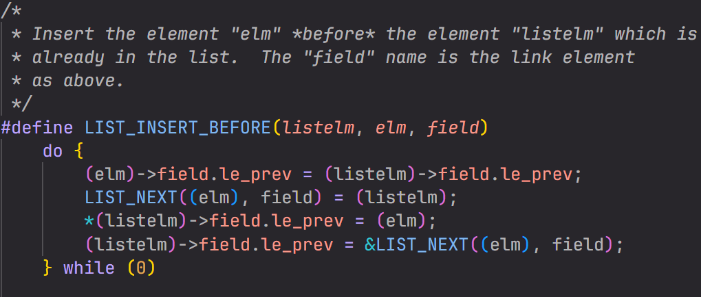
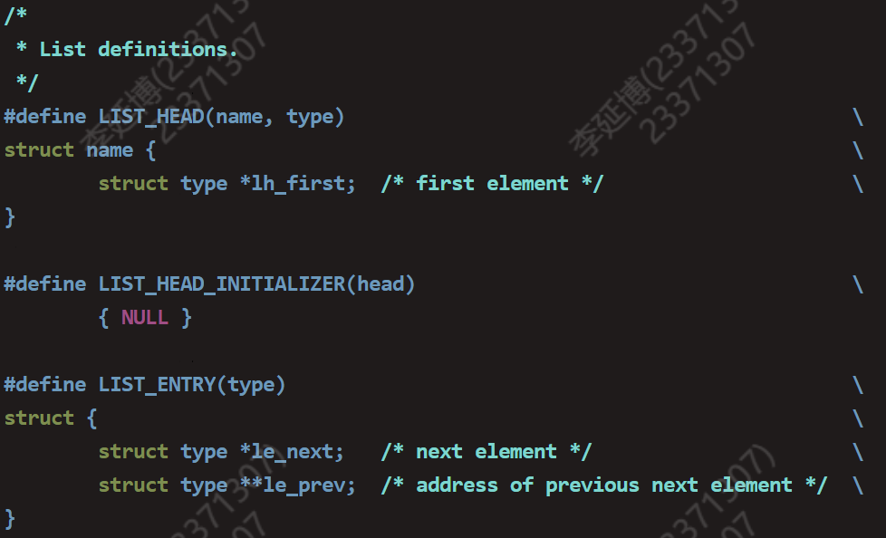
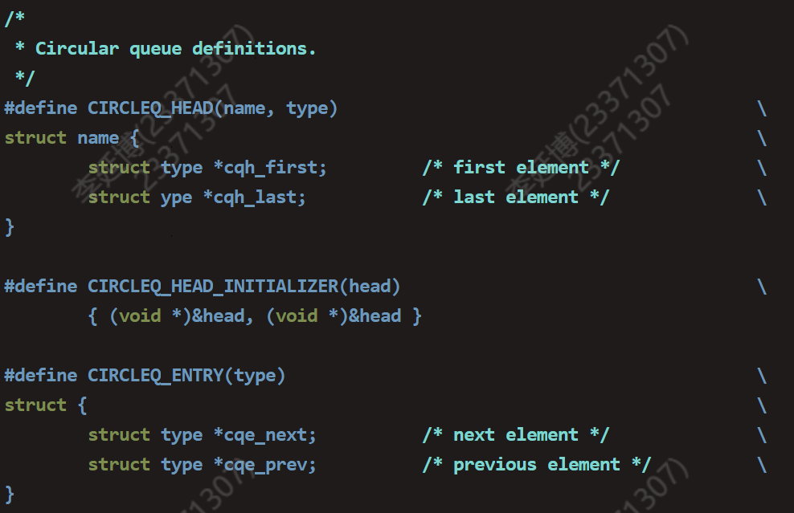

BUAA-OSLab2实验总结
想全是问题，做才有答案。
壹 前言
这两周冯如杯快要截稿啦，笔者的任务还是蛮多的，下周几乎与截稿日期同时还有OS期中考试！压力还是蛮大的，笔者也痛痛快快经历了一场焦虑与崩溃，但是理清思绪又是一次涅槃 ，事实就是不用太在乎每个事情的结果，就好比人生一场，路过人间的我们并不用每天在想自己什么时候离开这里，而是尽情享受自己生活的每一天吧。过程远大于结果，诗酒须趁年华，人生活在当下！
贰 正文
一 思考题汇总
Thinking 2.1
请根据上述说明，回答问题：在编写的 C 程序中，指针变量中存储的地址 被视为虚拟地址，还是物理地址？MIPS 汇编程序中 lw 和 sw 指令使用的地址被视为虚拟地址，还是物理地址？
指导书有言：
在实际程序中，访存、跳转等指令以及用于取指的 PC 寄存器中的访存目标地址都是虚拟地址。我们编写的 C 程序中也经常通过对指针解引用来进行访存，其中指针的值也会被视为虚拟地址，经过编译后生成相应的访存指令。
因此二者都被视为虚拟地址。
Thinking 2.2
从可重用性的角度，阐述用宏来实现链表的好处。
查看实验环境中的 /usr/include/sys/queue.h，了解其中单向链表与循环链表的实 现，比较它们与本实验中使用的双向链表，分析三者在插入与删除操作上的性能差 异。
首先，用宏本身就是一个提高可读性，简化代码量且更加易于维护的操作。
此外，对于Lab2实现的链表而言，许多复杂的宏可以套用简单的宏，大幅提高了可重用性。
以下图
LIST_INSERT_BEFORE举例： 这里就反复重用了宏
LIST_NEXT。比较单向、双向以及循环链表：
其中循环链表分为单向循环链表与双向循环链表。它们在性能与实现上分别与单双向链表相差无几。但是有一点值得注意：请看双向链表与循环链表在实验环境中的定义~
 
如你所见，实验环境中的双向链表和我们Lab2所用到的链表结构类似，存在一个struct type **le_prev的结构。也就是说双向链表中的prev是前一个结点的next指针的指针。而循环链表则只是单纯存储了两个前后节点的指针。
言归正传，我们来分析单向链表与双向链表在插入、删除过程中性能表现。
对于任意第i个节点的插入和删除来说，二者的性能大相径庭。实际上，插入与删除是两个时间复杂度为O(1)的操作，而导致性能差异的其实是单向链表在插入与删除前后，需要定位其在链表中的位置，更准确地说，他需要通过遍历找到它的前一个节点。既然说到链表结构的遍历了，时间复杂度自然就从O(1)上升到了O(n)，而与此同时，**le_prev已经迅速找到了前节点，时间复杂度仍然保持在O(1)。
Thinking 2.3
请阅读 include/queue.h 以及 include/pmap.h, 将 Page_list 的结构梳 理清楚，选择正确的展开结构。
1 | // 选C |
具体来说就是在queue.h中找出最基本的结构体LIST_ENTRY，并根据pmap.h中的typedef与struct的嵌套获取Page，最后需要注意的是LIST_HEAD中构建Page_list的时候，注意结构体内应该是头指针*lh_first。
Thinking 2.4
- 请阅读上面有关 TLB 的描述，从虚拟内存和多进程操作系统的实现角度，阐述 ASID 的必要性。
- 请阅读 MIPS 4Kc 文档《MIPS32® 4K™ Processor Core Family Software User’s Manual》的 Section 3.3.1 与 Section 3.4，结合 ASID 段的位数，说明 4Kc 中可容纳 不同的地址空间的最大数量。
指导书有言：
ASID：Address Space IDentifier 用于区分不同的地址空间。 查找 TLB 表项时，除了需要提供 VPN，还需要提供ASID 同一虚拟地址在不同的地址空间中通常映射到不同的物理地址。
换言之，操作系统在多进程操作中，每个进程都会有一个专属于自己的虚拟地址空间。为了避免错误或者紊乱的地址映射出现，ASID便是作为唯一的标识符，用来区分不同进程的地址空间。
ASID段的位数通常有8位，因此对应可以容纳2^8 = 256个不同进程的地址空间。
Thinking 2.5
- tlb_invalidate 和 tlb_out 的调用关系？
- 请用一句话概括 tlb_invalidate 的作用。
- 逐行解释 tlb_out 中的汇编代码。
前者调用后者。
通过把页表项清空使之无效。
LEAF(tlb_out) .set noreorder # 令代码按照顺序执行 mfc0 t0, CP0_ENTRYHI # 保存 CP0_ENTRYHI 寄存器至&t0，用于函数结束时恢复 mtc0 a0, CP0_ENTRYHI # 修改 CP0_ENTRYHI 寄存器为传入的&a0 nop tlbp # 查找TLB 与 ENTRYHI 寄存器中值匹配的表项，将表项索引存入CP0_INDEX nop mfc0 t1, CP0_INDEX # 取出index .set reorder # 允许汇编器重排指令 bltz t1, NO_SUCH_ENTRY # 没有查到该表项 .set noreorder # tlb表项存在，代码按照顺序执行 mtc0 zero, CP0_ENTRYHI # 清空以便于清空表项 mtc0 zero, CP0_ENTRYLO0 # 清空以便于清空表项 mtc0 zero, CP0_ENTRYLO1 # 清空以便于清空表项 nop tlbwi # 以填入0的方式清空该tlb表项 .set reorder NO_SUCH_ENTRY: mtc0 t0, CP0_ENTRYHI # 恢复CP0_ENTRYHI，即原来的VPN与ASID j ra # 返回到调用该函数的tlb_invalidate END(tlb_out)
Thinking 2.6
请结合 Lab2 开始的 CPU 访存流程与下图中的 Lab2 用户函数部分，尝试 将函数调用与 CPU 访存流程对应起来，思考函数调用与 CPU 访存流程的关系。
- 函数调用需要开启其独有的进程，如图中，
env_init就需要pgdir_walk进行遍历。 env_create中的env_alloc用pgdir_alloc为其分配页。- 另一方面
load_icode用于加载进程中的代码，需要用page_alloc和page_insert分配物理页给代码段并建立好地址映射关系。 - 当进程结束或内存区域不再使用时，即进入
env_destroy使用env_free，需要page_remove从页表移除相关映射，并使用page_decref减少页引用计数。
Thinking A.1
在现代的 64 位系统中，提供了 64 位的字长，但实际上不是 64 位页式存 储系统。假设在 64 位系统中采用三级页表机制，页面大小 4KB。由于 64 位系统中字长为 8B，且页目录也占用一页，因此页目录中有 512 个页目录项，因此每级页表都需要 9 位。 因此在 64 位系统下，总共需要 3 × 9 + 12 = 39 位就可以实现三级页表机制，并不需要 64 位。
现考虑上述 39 位的三级页式存储系统，虚拟地址空间为 512 GB，若三级页表的基地 址为 PTbase，请计算：
- 三级页表页目录的基地址。
- 映射到页目录自身的页目录项（自映射）。
页面大小4KB，所以页内偏移为12位。
一级页表内含有512个二级页表，每个二级页表亦含有512个三级页表。
若三级页表的基地址为
PTbase，则页号为PTbase >> 12
则二级页表的基地址应当是PTbase + (PTbase >> 12) << 3
则页目录基地址为PTbase + (PTbase >> 12) << 3 + (((PTbase >> 12) << 3) >> 12) << 3
而映射到页目录自身的页目录项地址为PTbase + (PTbase >> 12) << 3 + (((PTbase >> 12) << 3) >> 12) << 3 + (((((PTbase >> 12) << 3) >> 12) << 3) >> 12) << 3
二 难点分析
感觉本次Lab2的难点主要落在了物理内存与虚拟内存的交织。第一遍研究几乎无法将整个逻辑框架整理出来。个人偏爱于思考式学习，想要从目的到结果、从原理到实现地整个理解，整体而言，反复学习的过程，一直都有收获。
此外，由于项目庞大的特点，对项目整体的把控以及宏定义的使用熟练度也是笔者上机前焦虑的事情。在实存、虚存以及页控制块之间转换的宏更是在exercise中反复出现，让我在.c与.h文件之间反复横跳。例如下面这段代码，想法在脑子中，但是表达出来竟如此之难：

三 实验体会
难！🤯
感觉在深入感受一个前所未有的庞大项目。之前无论是CO还是OO，亦或是手头的科研项目，感觉都没有如此的庞大。顶多需要自己做一些迭代，而OS给人感觉是置身于崇山之中，要做的不仅是登顶，还要一览众山小，洞悉我们脚下的所有“地形”，说到底终究不是自己一步一步爬上来的，代码补全的唯一坏处就是给人以不安全感。因此感觉读代码的能力在OS的帮助下也在迅速提高。希望以后有时间还是更多的去思考、主要是要在爬山的路上，观察脚下的每一粒碎石，不徐不疾，拾阶而上吧。😊
叁 后记
最近在关注中美关税大战之事啊，真是闻所未闻😂。
虽然最近倍感压力，但是感受到了自己作为青年，和国家共同度过一段艰难的日子也是很光荣且令人热血沸腾的事情吧。
最后，借央视新闻B站官号视频下的热评收尾，与同流时代青年心跳共振、灵魂共鸣，真令人斗志昂扬吧。
言语终有竟时，我们下次再见！👋
活在这个时代，就得承担这个时代的责任。如果需要这一代必须牺牲，那么希望下一代能够好过一些。没有一身血，但也可以两脚泥，代代如此，自强不息。
If you like this blog or find it useful for you, you are welcome to comment on it. You are also welcome to share this blog, so that more people can participate in it. If the images used in the blog infringe your copyright, please contact the author to delete them. Thank you !